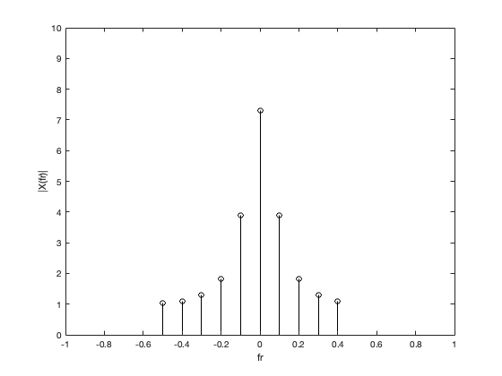
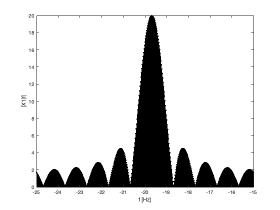
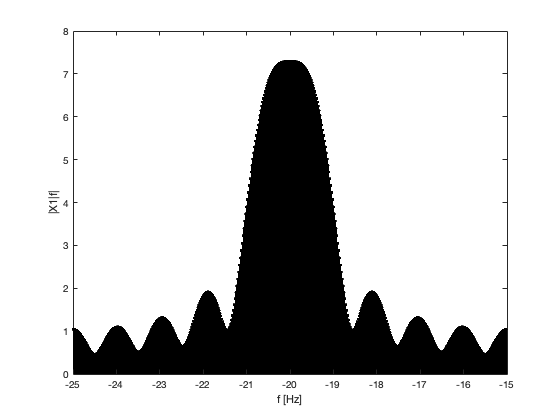
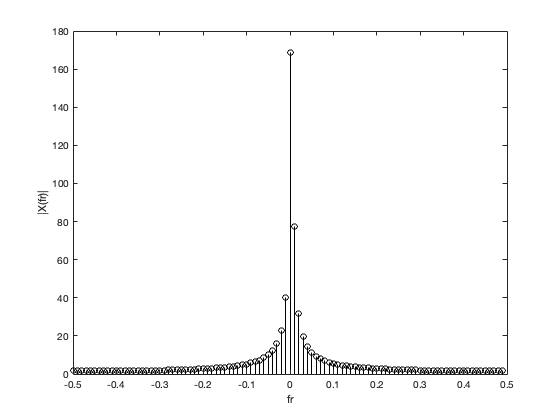
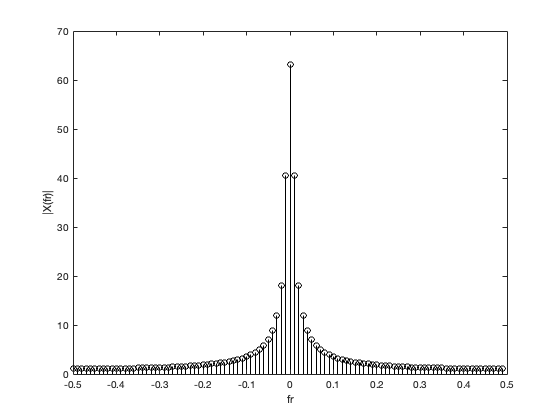
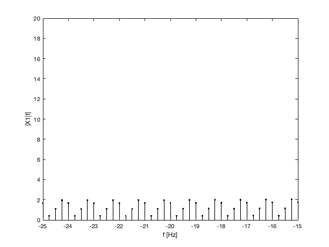
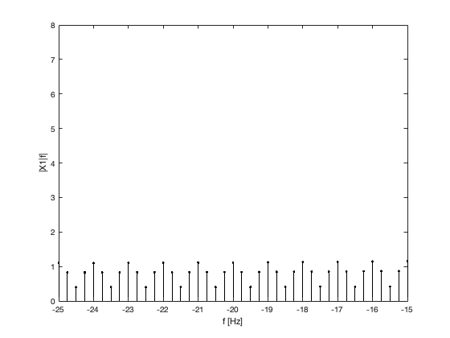

Lab 5: Sampling and Discrete Fourier Transform
Contents
A. DiscreteFourierTransformandzeropadding
1.
x1 DTF
T_0 = 1; N_0 = 10; T = T_0/N_0; n = (0:T:T*(N_0-1));
x_1 = exp(1i*2*pi*n*30/100) + exp(1i*2*pi*n*33/100);
x_2 = cos(2*pi*n*30/100) + 0.5.*cos(2*pi*n*40/100);
X_1 = fft(x_1); r = -N_0/2:N_0/2-1;
X_2 = fft(x_2);
fr = r/N_0;
stem(fr,fftshift(abs(X_1)),'k');
axis([-1 1 0 20]);
xlabel('fr'); ylabel('|X(fr)|');
x2 DTF
stem(fr,fftshift(abs(X_2)),'k');
axis([-1 1 0 10]);
xlabel('fr'); ylabel('|X(fr)|');

2.
X1 ZERO-PADDING
x_1_ZEROPAD = [x_1,zeros(1,48*length(x_1))];
X_1_ZEROPAD = fft(x_1_ZEROPAD);
f_zp = (0:49*N_0-1)/(T*49*N_0);
stem(f_zp-25,fftshift(abs(X_1_ZEROPAD)),'k.');
axis([-25 -15 0 20]); xlabel('f [Hz]'); ylabel('|X1|f|');

X2 ZERO-PADDING
x_2_ZEROPAD = [x_2,zeros(1,48*length(x_2))];
X_2_ZEROPAD = fft(x_2_ZEROPAD);
f_zp = (0:49*N_0-1)/(T*49*N_0);
stem(f_zp-25,fftshift(abs(X_2_ZEROPAD)),'k.');
axis([-25 -15 0 8]); xlabel('f [Hz]'); ylabel('|X1|f|');

3.
X1. 100 SAMPLES
T_0 = 1; N_0 = 100; T = T_0/N_0; n = (0:T:T*(N_0-1));
x_1 = exp(1i*2*pi*n*30/100) + exp(1i*2*pi*n*33/100);
x_2 = cos(2*pi*n*30/100) + 0.5.*cos(2*pi*n*40/100);
X_1 = fft(x_1); r = -N_0/2:N_0/2-1;
X_2 = fft(x_2);
fr = r/N_0;
stem(fr,fftshift(abs(X_1)),'k');
axis([-0.5 0.5 0 180]);
xlabel('fr'); ylabel('|X(fr)|');

X2. 100 Samples
stem(fr,fftshift(abs(X_2)),'k');
axis([-0.5 0.5 0 70]);
xlabel('fr'); ylabel('|X(fr)|');

4.
X1 ZERO-PADDING 100 samples
x_1_ZEROPAD = [x_1,zeros(1,3*length(x_1))];
X_1_ZEROPAD = fft(x_1_ZEROPAD);
f_zp = (0:4*N_0-1)/(T*4*N_0);
stem(f_zp-25,fftshift(abs(X_1_ZEROPAD)),'k.');
axis([-25 -15 0 20]); xlabel('f [Hz]'); ylabel('|X1|f|');

X2 ZERO-PADDING 100 samples
x_2_ZEROPAD = [x_2,zeros(1,3*length(x_2))];
X_2_ZEROPAD = fft(x_2_ZEROPAD);
f_zp = (0:4*N_0-1)/(T*4*N_0);
stem(f_zp-25,fftshift(abs(X_2_ZEROPAD)),'k.');
axis([-25 -15 0 8]); xlabel('f [Hz]'); ylabel('|X1|f|');

B. Sampling
[y,fs] = audioread ('handel.wav');
sound(y,fs);
Error using sound
Device Error: Internal Device error
Error in lab5 (line 98)
sound(y,fs);
1. N0 = 73113, T0 = 8.93, T = 1.2e-4
sampleTime = length(y);
totoalTimeSpan = sampleTime/fs;
t = linspace(0, sampleTime/fs, sampleTime);
2.
plot(t, y)
3.
Y = fft(y);
stem(t,abs(Y),'k');
4.
subsample = downsample(y,2);
sampleTime = length(subsample);
t = linspace(0, sampleTime/fs, sampleTime);
5.
stem(t,abs(subsample),'k');
6.
SUB = fft(subsample);
stem(t,abs(SUB),'k');
7.
sound(y,fs);
The sound has sped up and higher pitched
sound(subsample,fs);
C. Filter design
1.
LP = lowpass(y,2000,fs);
stem(t, LP);
sound(LP,fs);
3.
BS = bandstop(y,[16 256],fs);
stem(t,BS);
sound(BS,fs);
4.